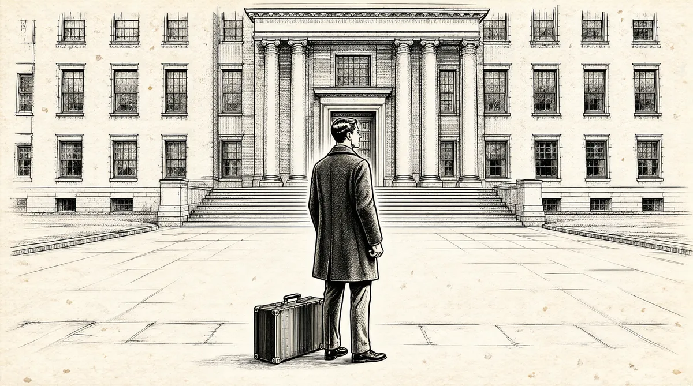

第11章 “胖姬”不胖

沃伦给家庭生活造成的混乱无疑让他父亲本已艰难的新任众议员工作更加不轻松。在众议院议长萨姆·雷伯恩令人愉快的统领下，第78届的国会成员彼此之间关系亲密。萨姆·雷伯恩是来自得克萨斯州的民主党人，他的办公室有5幅罗伯特·李的画像，而且全都面朝着南方。对那些喜欢随声附和的典型众议员来说，雷伯恩管理的众议院就像一个家，这些人很会捞肥差，他们的生活就是去参加县城的集会，以及亲吻示好某些人，比如某人的老祖母、选美冠军，或是任何他能接触到的部长级人物。雷伯恩以狡猾的幕后选票操纵和强有力的辩才而为人所知。他还在下午办一个私人沙龙，用加冰威士忌来款待他最喜欢的人。
很自然，霍华德不属于这群人，除了因为他是一个共和党人之外，还因为他对愉快的理解就是每晚看国会会议档案。因此，他从来不靠近那种沙龙。不过，在其他很多方面，他倒是那个时代的典型众议员，来自小城市，毕业于州立大学，成绩中等，干社区政务出身，是中产阶级的中等家庭的扶轮社成员，不是乡村俱乐部的一分子，反对共产主义。
霍华德·巴菲特既没有加入其他同僚们的俱乐部活动，也没有顺着权力的梯子往上爬。很快，他就被认为是内布拉斯加州有史以来可能最不会吹捧人的众议员。他远离那些无聊、无味的募捐和拉票活动，即使有那么多众议员一天到晚都是忙这些。而且，霍华德还公开声明，他那一票既不换钱，也不换物。他拒绝长工资，因为选他出来的人就是因为他拿得少而投他的票。他四处走动，对作为一名众议员的额外好处惊讶不已——有补贴的餐厅，充斥着朋友、亲戚和情人名字的工资单，免费供应植物的花房，以批发价出售商品的“文具店”，“文具店”什么都卖，从领带到珠宝——霍华德对这一切感到震惊，把这一切都公之于众。
霍华德的一位朋友，共和党领袖罗伯特·塔夫脱，和他一样一直以来都秉持孤立主义。1不过，孤立主义者不再进入众议院，他们或是离开或是退休。此外，因为战争尚未结束，政府财政处于赤字，霍华德痴迷于一个堂·吉诃德式的目标，那就是让美国重返金本位。美国在1933年放弃了金本位。从那时开始，财政部一直在随心所欲地印钞票，一开始为新政，之后为“二战”提供资金。霍华德担心有一天美国会像20世纪30年代初的德国一样完蛋，当时，德国人都推着一手推车的钞票到街上去买一棵白菜——直接导致德国被迫倾其黄金储备支付第一次世界大战的战争赔款，2由此产生的经济混乱局面是希特勒上台的主要原因之一。
霍华德确信政府会让整个国家破产，因此，他在内布拉斯加买了一个农场。当其他人饿肚子的时候，家人可以把农场当作避难所。巴菲特家的人都非常不信任政府债券，甚至还开会讨论把储蓄债券作为生日礼物送人。9岁的小伯蒂觉得自己的父母想要以此来骗某个家伙，她问：“但是，难道那个人不知道这些债券一钱不值吗？”3
霍华德的固执使他的立法无法开展。
他会在众议院的投票中失败，也许是412∶3。而我父亲就是那1/3。不过，结果影响不到霍华德，他不会因此生气。他的心态非常平和。但这会影响到我——我失败的时候会发疯。我甚至都想不起曾看到过父亲消沉或者沮丧。他只是认为他尽全力了。他对国家未来发展的预期很悲观，但他不是一个悲观主义者。
霍华德一直高调坚守其原则的做法——而不是加入同盟，共同实现共和党的目标——阻碍了他与同事之间的关系发展，而且让家里人付出了代价。利拉很在乎自己是否合群，其他人的看法对她很重要。她同时也很要强。“为什么你行事就不能更灵活一点儿呢？”她说，“就像肯·维利那样？”肯·维利是刚刚入选参议院的内布拉斯加参议员，爬升得很快。霍华德什么也没捞到。“我们对他有信心，”多丽丝说，“但是看着他一直失败，让人很难受。”这还是有保留的说法。巴菲特家的所有人都很崇拜霍华德的坚韧和刚毅，是父亲教会他们正直。但是，每个孩子都以自己的方式理解父亲的教导，并产生了适应家族独立精神的想法，这种独立不知因为何故，在一定意义上已经被减弱或被抵消了。
霍华德在政党中的“孤狼”立场加重了利拉急躁、易怒的情绪。她仍然对华盛顿的生活感到很痛苦，她想要复制出奥马哈的生活，闲暇时间都和内布拉斯加议员的太太们待在一块儿。但是，空闲时间有限，因为她现在已经不雇用清洁女工了。她感到自己被欺骗了，说：“我放弃所有，嫁给了霍华德。”4然后，还把自己这方面的悲痛添加进她的故事，讲述自己和霍华德如何为他们不知感恩的子女们做出牺牲。但是，利拉宁愿包揽一切家事，也不愿教会孩子们，好让孩子们能帮上手，原因是“自己做更容易”。这种牺牲自我的感觉让她在很多时候对孩子们很生气，尤其是对多丽丝——多丽丝也有自己的环境适应问题。
虽然别人都认为她非常漂亮、抢眼，但多丽丝说自己从未这么认为。她想成为华盛顿那个老练、复杂的群体中的一员，但她没有把握，不知道对这群人来说自己是否足够优秀。多丽丝受邀去法国大使馆，参加玛格丽特·杜鲁门的生日聚会；她的名字还被加入到成人登记册。同时，多丽丝开始计划和毕业的同学一起回到奥马哈，首次以阿克萨本公主（Ak-Sar-Ben，倒着拼写就是Nebraska，内布拉斯加）的身份登台亮相。沃伦对多丽丝的虚荣和做作大加嘲笑。
利拉是个顽强的奋斗者，非常在意外在的东西。她熟读每种关于温莎公爵夫人一言一行的记载——公爵夫人是一位身无分文的平民，被一位王子拯救。5不过，和公爵夫人（其余生积聚了全世界最叹为观止的珠宝收藏之一）不同的是，利拉的雄心和骄傲被伪装成了对出风头、讲排场不自然的鄙视。利拉把自己的家庭描绘为一个典型的中西部中产阶级家庭，可以上《星期六晚邮报》的封面，而且还痛斥多丽丝在社交方面野心勃勃。
沃伦14岁，在从艾丽斯·迪尔初级中学毕业后，在1945年2月成了伍德罗·威尔逊高中的二年级学生。6他想同时又“特别”又“普通”。和同班同学相比，沃伦远没那么成熟，因此，他的父母对他很关注，他们已经决心让他结束之前的混乱，有所改变。沃伦的送报工作还是他自立的经济来源，就如他现在所享有的人身自由一样。他在送报的时候也一直在读报。
我看报纸上的连环漫画和体育新闻，在每天早上送报之前也看报纸的股票版。我每天早上看漫画《莱尔·阿布纳》。我必须得知道莱尔·阿布纳每天都在做些什么。他吸引人的地方在于他让你自我感觉良好。你会看那些内容，然后想，“如果换成我多好……这个家伙这么迟钝。”另外，因为上面还有戴茜·梅尔，这个不可思议的女人就是喜欢他，总是在追他。而他却只是一直拒绝她，注意不到她。那段日子，每个精力充沛的美国男孩都在等待，等着戴茜·梅尔来找自己。
戴茜·梅尔——漫画女主人公，来自阿巴拉契亚山一个叫多格帕切的小村庄，是一位勇敢大胆的金发美女，穿着露肩的圆点花衬衫，胸脯丰满。头脑简单、四肢发达的莱尔·阿布纳将其毕生的大部分时间都用来躲避戴茜·梅尔对他的追求。不过，他跑得越快，对戴茜的注意和渴望越是充耳不闻，对戴茜越是轻蔑地加以拒绝，戴茜就追得他越紧。虽然不乏有钱和有权的人向戴茜求爱，但对戴茜·梅尔来说，世界上只有一个人，就是莱尔·阿布纳。7
除了让人觉得困惑和难以琢磨之外，莱尔·阿布纳唯一看得见的资产就是他的男性体格。迄今为止，沃伦过去和女孩交往的失败表明，如果他想要吸引像戴茜·梅尔这样的女孩，那他最好做些什么来增加自己的魅力。这下，沃伦产生了一个新的兴趣，这也顺便让他有了躲起来待在地下室的借口。在南奥马哈饲料公司的时候，弗兰奇·齐克能一次数小时不停地搬举50磅重的饲料包。沃伦设法让朋友卢·巴蒂斯顿也对此产生了兴趣，两人开始了一项举重训练计划。在当时，举重训练并不属于专业运动员的活动范畴，不过，这种训练有很多方面都让沃伦很喜欢：规律、测量、计数、重复，与自己竞争。在寻求训练技术的时候，沃伦发现了鲍勃·霍夫曼和他的杂志《力量与健康》。
霍夫曼想要通过《力量与健康》的积极宣传改变人们对举重的偏见。这本杂志的编辑、出版都由霍夫曼亲自完成，而且显而易见的是，大部分内容也是他自己撰写的。杂志的每一页几乎都有他的产品广告。“鲍勃叔叔”的专业知识、训练技巧，及其持续不断的营销自己的能力，非常引人注目。
他是大部分奥运选手的教练，是约克杠铃公司的头儿。而且他还出过两本书《强壮的臂膀》和《强壮的胸肌》。他一开始销售的器具是杠铃。如果你去当时的体育用品店，店里出售的都是约克杠铃。你可以买到各种不同重量级的杠铃。
沃伦买了一副哑铃、一副杠铃和一套杠铃片。杠铃片可以装在杠铃上，或从上面卸下来，沃伦用附带的小螺丝刀固定或拆卸杠铃片。他把这些东西都放在地下室，“总是在下面弄得叮叮当当的，我的父母对此感到很高兴。”
有时，沃伦会去基督教青年会，和其他年轻人一起举重。沃伦和卢对这一爱好很认真，他们非常关注“鲍勃叔叔”写的一切东西。霍夫曼懂得如何让训练与时俱进。每个人都知道凶残的日本士兵承受痛苦和折磨的能力，因此霍夫曼写明，举重训练的要点是与日本人作战。为了说明这点，他用了一张凶残的日本士兵的照片，照片上日本士兵从脚趾到头顶弯曲成弓状，在这个姿势下，胸部一挺举起水泥做的杠铃——他为了击败联军而训练。沃伦练习举重并不是为了打败日本人，或者想要战胜什么人。不过，“鲍勃叔叔”写的每句话和每个字都鼓励着他去挑战自己。
不过，当沃伦在地下室“当啷当啷”训练的时候，共和党人的日子可不好过。富兰克林·罗斯福已经打算参加第四任总统竞选，以保证民主党人在白宫再待上4年。在晚饭桌上，全家听着霍华德怒气冲冲地喋喋不休。之后，4月12日，罗斯福因脑溢血去世，他的副总统哈里·杜鲁门继任为总统。
罗斯福的去世令全国大多数人陷入到深深的哀悼和悲痛当中，而且还带着一丝担心和恐惧。美国加入“二战”已经3年半了，如今失去了令国家感到安全的人。人们对杜鲁门的预期很低，他接手了罗斯福的内阁，但似乎没什么威望，以至于有些人认为他可能无法胜任总统的工作。不过，对巴菲特家的人来说，没有人比罗斯福更差、更糟。住在同街的一家人——男主人的父亲在加拿大大使馆工作——因为罗斯福过世而前来拜访他们的众议员邻居，以表示吊唁。不过，当他们来到巴菲特家的时候，多丽丝说：“其实，我们正在庆祝呢。”8
对沃伦·巴菲特来说，罗斯福的逝世意味着又一条生财之道，报纸都出了特刊。当所有人都在悼念的时候，他在街角四处忙活，零售报纸。
一个月后，即1945年5月8日，在德国无条件投降之后，第二次世界大战欧战胜利日到来。各大报纸再一次出特刊，沃伦则照例回应、附和了父亲的政治信念。不过，这个时候，他只是顺便关注了一下大人们关心的事，因为他真正的兴趣是举重和鲍勃·霍夫曼。他大部分的空余时间都花在地下室。过了几周，学校放假了，他也坐不住了。他要去见他的偶像“鲍勃叔叔”。“我必须亲眼见见他。”
带着父母开心的祝福，沃伦和卢出发去宾夕法尼亚州的约克，中途搭了一段便车。9
鲍勃·霍夫曼在约克建起了这家制造杠铃的杠铃公司。这个公司不只是一个生产工厂，霍夫曼让整个奥运队伍都在那里训练。约翰·格里梅克是个大个儿的健美运动员。史蒂夫·斯坦科是当时世界挺举纪录保持者：381磅。不过，这是他进入超重量级别前的成绩。
从某种意义上讲，这次出行有些令人丧气。
在那段时间里，这些人的体格并没有以同样的方式变得强健。这里的人都是奥运冠军，但是他们很多人个头都很小，因为他们都是轻量级选手。如果是在工厂里穿着生产服，他们看起来就平平无奇。看到这些，我的想法动摇了。
不过，从另一个角度看，这些外表普通的人激发了男孩们的志气，因为这表示自己也能获得健美的成功。男孩们想着自己成为男子汉，成为体格健壮的强人，就可以吸引女孩的目光。
当“鲍勃叔叔”说话的时候，就像是上帝在和我们对话。当你看着镜子中的自己，你可以看到三角肌、腹肌和背阔肌。你学习并了解到了所有的肌肉组织。
不过，《力量与健康》杂志上最具魅力的名人，除了“鲍勃叔叔”自己以外，不是约翰·格里梅克这位全世界最出色的健美运动员，而是一名女性。
《力量与健康》杂志里有很多女性。胖姬·斯托克顿（PudgyStockton）大概是唯一一个出名的人。我喜欢胖姬。她非常有魅力，我们在学校的时候谈论很多和她有关的话题。
这不只是轻描淡写的一说。沃伦和卢都被胖姬·斯托克顿迷住了。虽然她叫“胖姬”（Pudgy，有胖的意思），但她是一件人体艺术品。当她肌肉线条清晰的手臂将巨大的杠铃举过微风吹拂的头发，紧致的大腿肌肉毕现，身穿比基尼向圣莫尼卡海滩上的体格魁梧的男子和张口结舌的旁观者展现出纤细的腰部和坚挺的胸部。她身高只有1.55米，体重115磅，但她可以把一个成年男子举到高过头顶，而完全无损其女性气质。作为世界上“第一流的女性体育专家”，她在洛杉矶管理着一个健身沙龙，并在《力量与健康》杂志的专栏上写道：“在锻炼胸部、塑造身材曲线和减肥方面，杠铃运动有特别的效果。”10
“她的肌肉像蜜琪·嘉诺，胸部像索菲娅·罗兰。”卢·巴蒂斯顿说，“她非常出众。我必须承认，我们对她充满渴望和冲动。”
直到这个时候，戴茜·梅尔还是沃伦的梦中女孩。他总是在女性身上寻找戴茜·梅尔的特质。
不过，如果你有一个胖姬这样的女朋友，你并不十分清楚你要怎么办。11两个男孩子看不懂“鲍勃关于成功、幸福婚姻指南”的内容，包括“婚前检查，如何对未婚妻进行婚前检查，以确定她是‘处女之身’，还有如何求爱、人们结婚的理由以及做爱的非主流姿势等”。他们很好奇，什么是做爱的非主流姿势？对他们来说，即使是主流的姿势在很大程度上也是神秘未知的。《力量与健康》杂志背面的宣传是20世纪40年代最好的性教育了。“别担心，爸爸，我们会去地下室，再研究一下我们的体格训练。”
不过最后，沃伦对数字的兴趣还是占据了上风。
你看，你可以一直测量你的二头肌，看它们有没有从13英寸增大到13.25英寸。你总是在担心运动绷带有没有松之类的所有问题。不过，我从未像查尔斯·阿特拉斯锻炼前后的照片所显示的情形那样提高自己。我认为，经过几千次屈臂练习之后，我的二头肌会从13英寸变成13.25英寸。
《强壮的臂膀》这本书对我没太大的帮助。
[1]罗伯特·李，美国内战中南方军队的将领，代表南方签署了投降条约。但其本人反对蓄奴制度，也反对美国分裂。——译者注